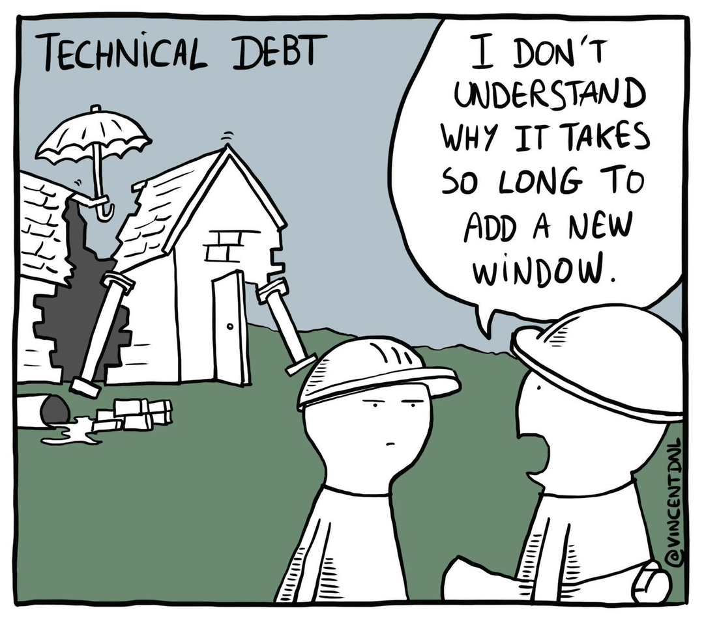
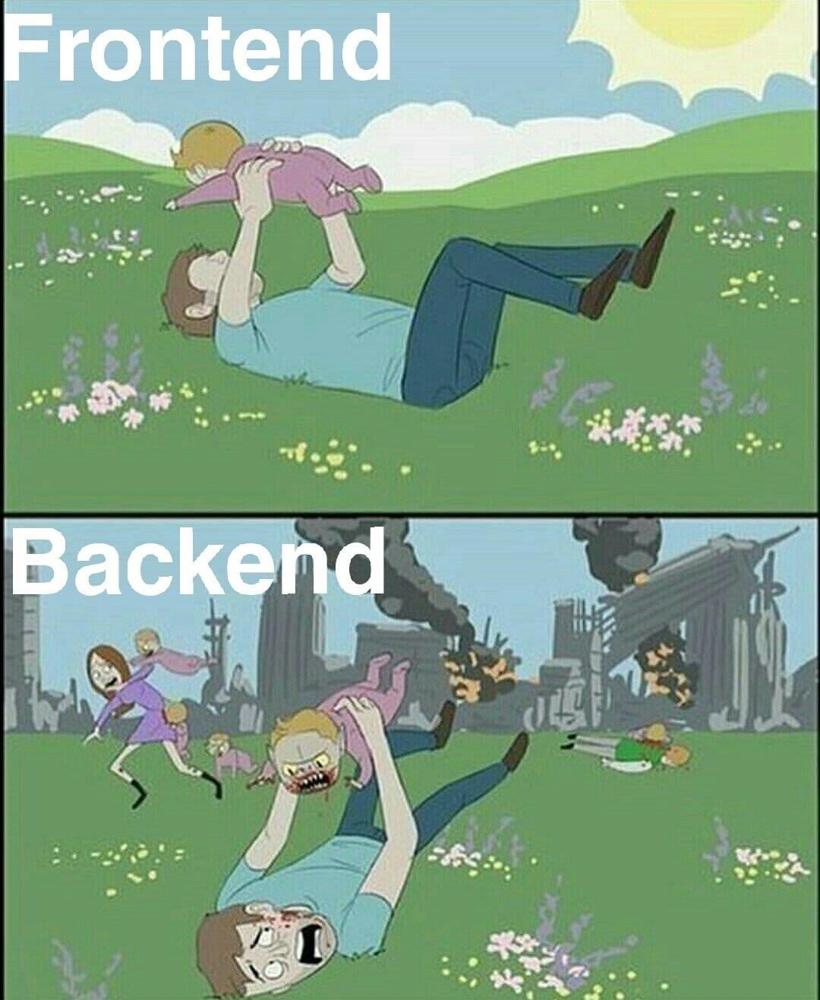
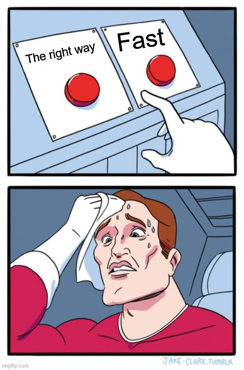

Technical architecture and technical debt
What they are and why it matters
15 July 2026
Tech debt

OK, that’s it, done
OK, one more

All done
OK, fine…
- With great power comes great responsibility
- We can do whizzy things very quickly now but there are hidden pitfalls
- The promise of data science tools and the data science team is speed and reusability
A formal apology
- To my brilliant team and anyone else who knows technical stuff
- I am mangling stories and concepts here
- Partly deliberately to help understanding
- Partly through ignorance
- I’m sorry! Please avert your eyes if I say something stupid
- The points I’m making are about culture and practice, so ignore the technical stuff, wrong and right, and listen to what I’m saying about how we need to work
Issues arising
- Moving from each project having its own data pipelines to reusing data pipelines
- Moving from each project having its own methods and definitions to reusing methods and definitions
- Moving from one off to repeatable analyses
- Moving from reports to interactive products
- Pace, pace, pace, pace, pace, pace, pace, pace, pace, pace, pace, pace
- If there is time more stuff on pace
Story time
- When I started, (Jan 2023) the civil servants running NHP wanted to populate a huge spreadsheet
- We built an app instead, to help the parameters be correct
- Because iteration was important and the results complex, we also built an outputs app so people could self serve the model runs
- After some early niggles both ended up being very useful and valued by users
Job done

But wait!
- We have these whizzy tools, let’s get more out of them
- Because it requires a login, people are printing 92 pages of graphs off the app and emailing them
- TPMA explorer!
- As more schemes come on board and run more models the system that finds the model runs gets really slow
- Azure table storage!
- Let’s have a scenario comparison tool
- Reskit!
Techdebt!
- Welcome all to the wonderful and strange land of techdebt
- Sometimes you made something whizzy and great and people want more
- Sometimes you knew you hacked it together too quickly and it would need fixing
- In either case this techdebt will be chained to your ankle until you fix it
- And while you’re fixing it absolutely nothing visible happens at all, which customers love
TPMA explorer
- People are printing 92 pages of a dashboard, surely we can just repurpose the inputs app
- Let’s add in local authority data, that can’t be too hard can it?
- But wait! There’s an inconsistency in our age standardisation across NHP products that needs fixing
- …two months spent fixing the age standardisation methodology
TPMA explorer
- Sorted, now we can just repurpose the inputs dashboard to show TPMAs across organisations
- But wait! The inputs dashboard was only ever designed to hold data for one organisation at once
- …lots of workarounds in some of the outputs to minimise the amount of data in memory at startup
Azure table storage
- The system that finds the model runs used to work by just looking at every model run
- Like in a library, it just started at the first book and went book by book
- This works great with 20 model runs
- It does not work great with 1,000
- Let’s add a library catalogue so the system can know where to find a model run
- Simple enough
But wait!
- There are a huge number of products and processes that use the old method
- There isn’t time to write code to allow every product to use the new method
- So for a while we have to worry about both the old way and the new way
- I’m not going to pretend to understand the change but it was big, complicated, and necessary (and invisible)
Scenario comparison
- Users want to compare scenarios
- Everyone’s busy so let’s not overcomplicate it, let’s just copy code from the results app
- …coding please wait…
- Done
- But wait!
- What happens when we change the results app? Or we find a bug
- We have to copy the code across
Reskit to the rescue
- Reskit abstracts the functions from the results applications
- Now we can change the function in one place and it will appear everywhere reskit is used
- Reskit is brilliant and essential and takes time to produce and time to wire in place of the old
- This is the true cost of reuse- it’s not free and it’s not simple
One more on TPMAs
- TPMA explorer is being pushed out into the wild, let’s have a conversation about refining their presentation
- …conversations… changes to TPMA explorer… done
- But wait! The TPMAs are in the inputs app and now they look different
- That will confuse people who are looking at both
Let’s talk about QA
- Hello! I’m an imaginary person with a report to QA
- I show it to some analysts and they check the numbers
- I show it to my boss to check the messaging
- Done!
QA of an app
- Hello! It’s me again. Everyone liked the report so much I made it into an app
- I show it to some analysts who have to check lots of different states of the application
- I show it to my boss who can’t QA properly because they can’t check every state of the application
QA of a -verse
- Hello! We’re an 11 person data science team and we have built loads of products in the NHP-verse
- I show a change in a product to some analysts who have to check lots of states of the application
- Then I remember that the code actually affects something else so I show them that too
- A bug is reported in the underlying data so I fix that
More QA
- Then they all QA all of it again
- Then I remember the change in the data is visible in something I didn’t change
- Yet more QA
- My boss has given up even trying to follow at this point
Tech debt
So what’s the point of all this?
- Reproducibility and applications are great but they come with a hidden cost
- Every time you build something you have to maintain it forever
- Reusing data and products sounds like a no brainer and it is- done slowly with care
QA and IG
- QA in particular with applications it’s a different ball game
- QA complexity scales exponentially with the complexity of the application and its dependencies
- What is non disclosive in a report can become disclosive in an application
How do DS work?
- We’re always managing techdebt. Either avoiding the debt we have or trying not to create more
- Mo’ speed, mo’ techdebt (you might call it the Max Power way)
- We do as little as possible, in the simplest way possible
- We plan carefully and maintain visibility as well as managing bus factor
- Sometimes we create techdebt to meet SU deadlines- and that’s fine, but it needs to be fixed
What’s my message to you?
- Be aware of the huge debt underneath the beautiful NHP iceberg
- Don’t underestimate how long it will take us even to decide to do something
- Think about your own work- am I using or referencing something else (e.g. TPMAs)? Is my work increasing confusion or complexity?
- Think carefully about the reusable reports and applications you build. It takes time to get them right and they’re not just for Christmas
Pace

Pace
- This is almost my entire job
- I try to help the team do small, simple things, carefully
- I try to help the organisation to meet its strategic objectives with data science
- The team can screw up in the huge range of ways possible to screw up- and they manage that risk every day
Learn more about The Strategy Unit